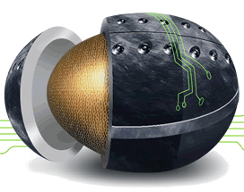

 |
Math 241Calculus and Analytic Geometric ALecture 010. Discussions 020D 021D 022D. |

|
 |
Math 241Calculus and Analytic Geometric ALecture 010. Discussions 020D 021D 022D. |
|
Instructor: Prof. L. F. Rossi
Teaching Assistants: Sarah Goodpaster (020D 022D) Ph: x3175, Office: Ewg 332 and Alex Zorach (021D) Ph: x4455. Off: Ewg 407.Meetings:
Lecture:MWF 0800-0850 in KRB 004.Office Hours: Monday 1100-1200, Wednesday 1000-1100, Thursday 1000-1100 or by appointment.
Section 020D recitation: T R 0800-0850 in EWG 203.
Section 021D recitation: T R 1400-1450 in EWG 203.
Section 022D recitation: T R 1100-1150 in EWG 203.Email: rossi@math.udel.edu
Maple TA links: Section 020D, Section 021D and Section 022D.
Your Calculus Wiki (Requires UD authentication).
Final exam: 23 May, 1530-1730, KRB100.
Department of Mathematical Sciences
University of Delaware
Newark, DE 19711
USA
| Number of exercises completed: | 0 | 1 | 2 | 3 | 4 | 5 | 6 | 7 | 8 | 9 | 10 |
| Credit (% of final grade): | 0 | 1.97 | 3.16 | 3.88 | 4.32 | 4.59 | 4.75 | 4.84 | 4.91 | 4.94 | 4.97 |
| 2002 Fall | Exam 1 solutions | Exam 2 solutions | Exam 3 solutions | Final exam solutions N/A. | |
| 2005 Fall | Exam 1 solutions | Exam 2 solutions | Exam 3 solutions | Final exam solutions N/A. | |
| 2006 Spring | Exam 1 solutions | Exam 2 solutions | Exam 3 solutions | Final exam solutions N/A. | |
| 2007 Spring | Exam 1 solutions | Exam 2 solutions |
 Last modified: 11 May 2007
Last modified: 11 May 2007